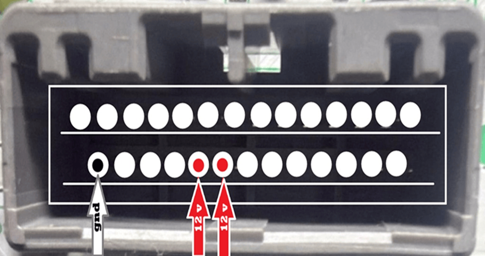

Ayuda bloqueada · Solo esta unidad (MT-09) · Sin acceso a otras fichas
HELP ONLINE SYSTEM

Lectura y escritura
Expertos en UPA
+52 55 7891 4191
Kilometraje
 HELP ONLINE
Solo esta ficha · MT-09
HELP ONLINE
Solo esta ficha · MT-09